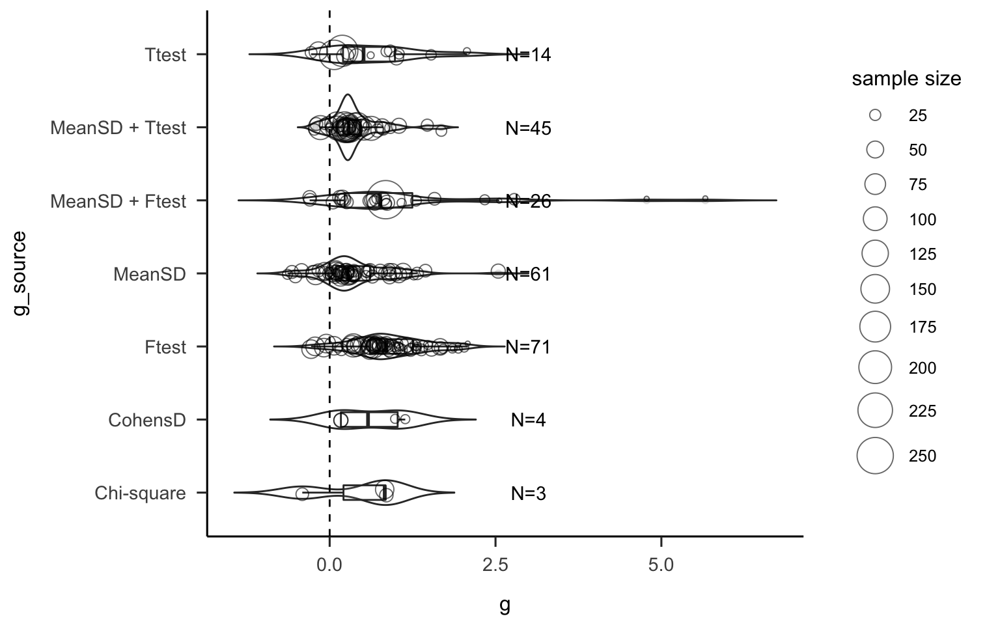

Chapter 4 Effect Sizes
Note: These plots are just raw effect sizes, it is not the output of a meta-analytic model.
Effect sizes are NOT corrected for non-independence or weighted by variance or sample size.
4.1 Effect sizes by Sample Size
Note: studies with N > 100 are highlighted
Studies with N > 100Click to expand!
| Paper | Study | Cognitive_domain | Task | g |
|---|---|---|---|---|
| 69 | Stothart et al VSS poster 2014-EXP1: overt recruit | top-down attention | MOT | 0.068 |
| 69 | Stothart et al VSS poster 2014-EXP2: covert recruit | top-down attention | MOT | 0.190 |
| 73 | Unsworth et al. 2015-EXP2 / extreme groups - reanalysis | inhibition | SART | 0.276 |
| 73 | Unsworth et al. 2015-EXP2 / extreme groups - reanalysis | inhibition | Spatial stroop | 0.310 |
| 73 | Unsworth et al. 2015-EXP2 / extreme groups - reanalysis | problem solving | Letter sets | 0.300 |
| 73 | Unsworth et al. 2015-EXP2 / extreme groups - reanalysis | problem solving | Paper Folding | 0.273 |
| 73 | Unsworth et al. 2015-EXP2 / extreme groups - reanalysis | problem solving | RAVEN (RAPM) | 0.107 |
| 73 | Unsworth et al. 2015-EXP2 / extreme groups - reanalysis | spatial cognition | Matrix monitoring | 0.120 |
| 73 | Unsworth et al. 2015-EXP2 / extreme groups - reanalysis | spatial cognition | Symmetry span | 0.417 |
| 73 | Unsworth et al. 2015-EXP2 / extreme groups - reanalysis | top-down attention | Antisaccade | 0.284 |
| 73 | Unsworth et al. 2015-EXP2 / extreme groups - reanalysis | top-down attention | Change detection | 0.377 |
| 73 | Unsworth et al. 2015-EXP2 / extreme groups - reanalysis | top-down attention | Cued visual search | 0.242 |
| 73 | Unsworth et al. 2015-EXP2 / extreme groups - reanalysis | top-down attention | Flanker task | 0.288 |
| 73 | Unsworth et al. 2015-EXP2 / extreme groups - reanalysis | verbal cognition | Continuous counters | 0.214 |
| 73 | Unsworth et al. 2015-EXP2 / extreme groups - reanalysis | verbal cognition | Keeping track | -0.140 |
| 73 | Unsworth et al. 2015-EXP2 / extreme groups - reanalysis | verbal cognition | Number series | 0.227 |
| 73 | Unsworth et al. 2015-EXP2 / extreme groups - reanalysis | verbal cognition | OSPAN | 0.263 |
| 73 | Unsworth et al. 2015-EXP2 / extreme groups - reanalysis | verbal cognition | Reading span | 0.203 |
| 73 | Unsworth et al. 2015-EXP2 / extreme groups - reanalysis | spatial cognition | Rotation span | 0.626 |
| 73 | Unsworth et al. 2015-EXP2 / extreme groups - reanalysis | verbal cognition | Visual Brief Report | 0.516 |
| 82 | Caroux 2016 - MALES ONLY | top-down attention | Visual search (low / high task difficulty - no feature in common between target and distractors or 1 feature in common between distractor and target : either size or color, low / high background difficulty) | 0.844 |
4.2 Effect sizes by Source
 Note: when MeanSD and T-test or F-Test is available we use the MeanSD
4.3 Effect sizes by Cognitive Domain
4.4 Examine outliers and Winsorize
currently 24 effects winsorized with this approach!
Click to show Winsorized studies!
4.5 Final dataset
The analysis is based on 224 effect sizes (vs 194 effect sizes in Bediou et al. 2018). These ES’s were extracted from 102 (vs. 89 in Bediou et al. 2018), published in 73 manuscripts (vs 73 in Bediou et al. 2018).
The following studies were included in the first MA but excluded in this new MA (see reason).
| Reference | Reason for exclusion |
|---|---|
| Appelbaum et al. 2013 | hours NVGP, gender ratio difference |
| Berard, Cain et al 2015 | unmatched gender ratio |
| Bailey et al 2009; 2010; 2012… | hours AVGP (total) |
| Buckley et al. 2010 | hours AVGP (range only) |
| Cain et al 2009; 2012; 2014 | unmatched gender ratio |
| Donohue et al. 2012 | hours AVGP (mean 3 h / week + expertise) |
| Dye et al 2009 Neuropsychologia | unmatched gender ratio (ADULT SAMPLE 18-22) |
| Dye et al 2010 ADULTS 18-22 | unmatched gender ratio (ADULT SAMPLE 18-22) |
| Novak & Tassel 2015 | cannot verify AVGP hours (see email exchanges) |
| Unsworth et al. 2015 EXP1 | Unmatched gender ratio |
The following manuscripts published after January 2015 were included:
notes: Studied by Föcker et al. (2018, 2019, in prep) were included in Bediou et al. 2018 in their unpublished versions.
Old vs New data (compared to Bediou et al. 2018)
The table below indicates how many ESs, Studies and Papers were included in
Bediou et al. 2018, and how many are new.
| n_papers | n_studies | n_es | |
|---|---|---|---|
| included in Bediou et al. 2018 | 57 | 83 | 173 |
| New | 16 | 19 | 51 |
| TOTAL | 73 | 102 | 224 |
4.6 Small study effect?
Publication bias detection and correction relies on regression methods that relate effect sizes with their precision (most often using sample size, standard error or variance).
The figure below shows the relationship between effect size and effect size variance
(which is related to sample size). Effect sizes are colored by cognitive domain.